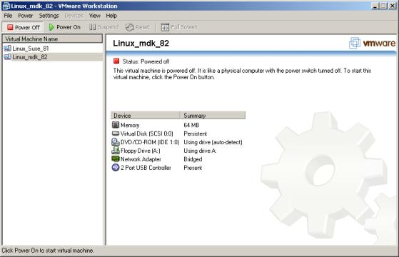
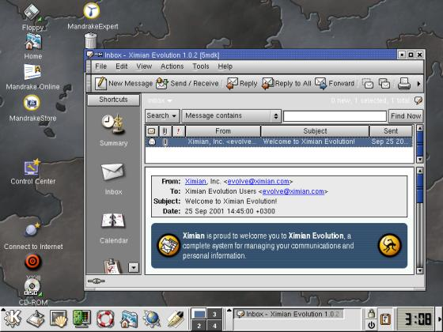
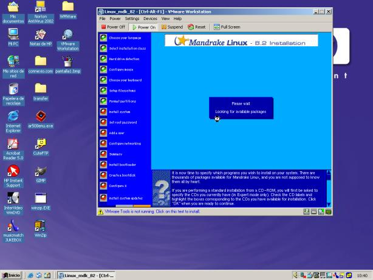
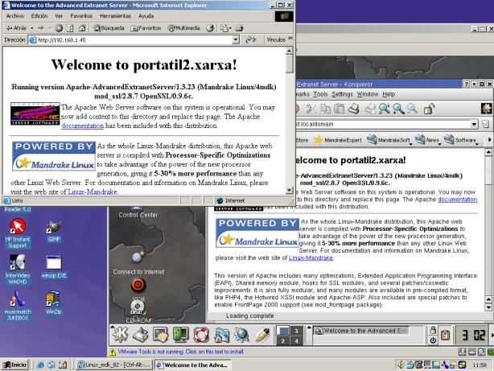
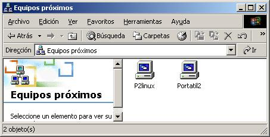

|
...making Linux just a little more fun! |
By Alan Ward |
The pros and cons of vmWare for the Linux enthusiast.
vmWare is a virtual machine. That is to say, it emulates an Intel-based PC in much the same way there are emulators for Motorola-based machines out there. Though the fact that it is emulating an Intel-based platform while running on ... an Intel- based platform (!) means that vmWare can in fact pass many instructions straight to the CPU for execution with no intermediate translation, thus speeding up the process somewhat. This is a bit different from a Java virtual machine, for instance, where the emulator gets to translate Java byte-codes to Intel instructions before getting them executed.
Yes, it is a commercial program; i.e. you should pay for it, though you do get to evaluate for free. Now, before going into the details, allow me to state my position on commercial programs: I am not against commercial programs. I have used several commercial programs that were in fact pretty good, and well worth the money invested. However, I do prefer open-source software, not for the ecomical aspect but because that if - or rather when - something goes wrong or is not quite what I need, I can fix it myself instead of depending on a corporation to do it at their leasure. I have nothing against vmWare, on the contrary ... but for the above reason I would much prefer to be reviewing an open source version of the same type of program.
Why use vmWare?
1/. One good reason to use it is when you really must. For example, I use a laptop at work that is shared between several people (not yet Linux users), and that for mainly administrative reasons:
On the other hand, I teach a course on web site creation and administration with Apache and PHP, for which it is expedient to use a laptop running Linux and X Windows.
2/. vmWare sets up a virtual machine that you can configure according to your needs - not according to the real hardware on your computer. For example, it sets up by default a 4 GByte file on the hard drive to emulate the drive on the virtual machine. To the virtual machine, this file looks like a SCSI drive, when it is in fact just a file on the IDE drive. Also by default, it uses an IDE CD drive just like ... an IDE CD drive. Though you can tell it to use it as a SCSI drive, or set up an ISO CD-ROM image as a drive with the CD inside it (e.g. for installation). You get to use hardware you don't actually have, such as tape drives. Good for experimentation.

3/. You can also have several virtual machines running at the same time, and set up a local network on your computer with different operating systems. This is good either to

4/. If you really need a program that does not run on the main operating system, you get it in a window.
Rather interestingly, this used to be a problem for Linux users that needed programs available only under Windows (usually commercial). Word processors and spreadsheets were a bit of a problem before StarOffice and OpenOffice became commonplace. Right now, I find I often have this problem in reverse: I get interesting programs for Linux that are available only with difficulties for Windows, or not any recent versions. Some examples are mathematical plotting tools such as gnuplot and scilab, or just user programs I prefer like Evolution.
Why not use vmWare?
1/. Speed. After all, we are sharing a single CPU between two or more operating systems. Though this problem is mitigated if we run user-land programs on just one system at a time. By the way, it would be nice on a SMP system to have vmWare dedicate one CPU to each virtual machine ... though probably impossible to have without redesigning the host operating system's kernel completely.
2/. Speed once again. You do need plenty of physical RAM to run at a reasonable speed. Try to have at least 128 MByte per operating system, or be prepared for intensive swapping. This may be a problem on a laptop, either way (remember that a laptop's hard disk is not built for intensive use). Try not to use the virtual machines' swap systems.
3/. Speed, third time 'round. All peripherics (drives, network cards) are shared between virtual machines. For example, on a machine with two virtual machines running and with much luck, each system gets a fair share (one third - remember the host system!) of the bandwidth. Actual results can be much lower, depending mainly on the host operating system's design and efficiency.
Installing vmWare
Using vmWare is rather easy. I got to install only the Windows version (because of bandwith problems for downloading), and as noted above it is the version I needed the most. However, it may make more sense to use the more stable OS as host; i.e. run Windows in a virtual machine on a Linux host computer instead of the opposite as I was forced to do.
Installing Linux in a virtual machine is as easy as:
I installed both SuSE 8.1 and Mandrake 8.2 with no problems in this way, though the virtual machine insisted on an IDE CD drive for booting. I was able to switch to a SCSI drive once the system was installed, though.

The virtual machine has access to the network through a proprietary vmWare bridging protocol - but only if your network card has been enabled on the host system. It can either use a static IP address or get a dynamic address from your network DHCP server.
You can then connect to a server running on the virtual machine from the virtual machine itself, from other computers on your network, or even from the host computer through the virtual machine's external network address.
Note that vmWare assigns to both the host system and virtual machines addresses on subnetworks 192.168.19.0/24 and 192.168.199.0/24 for its bridging protocol - you cannot use these for your connections.

There may be more straightforward ways of passing files from one system to another, but the easiest I found was to set up a Samba server on the virtual Linux machine. It works well enough, and is logically faster than a 100 Mbaud link, but may not be a good idea in a production environment.

The end result of all this is that I find vmWare a fascinating concept - with its drawbacks, true enough. It can be useful in a development environment, either for programming or for systems administration. But it should be avoided for production: if you really need two operating systems, you may be better off buying two computers!
PS. Should anybody want to translate this article: I wrote it in the spirit of the GPL software licence. i.e. you are free (and indeed encouraged) to copy, post and translate it -- but please, PLEASE, send me notice by email! I like to keep track of translations -- it's good for the curriculum :-)
![[BIO]](../gx/2002/note.png) Alan teaches CS in Andorra at high-school and university levels. His hobbies
include science photography (both digital and traditional), trekking, rock and
processor collecting.
Alan teaches CS in Andorra at high-school and university levels. His hobbies
include science photography (both digital and traditional), trekking, rock and
processor collecting.